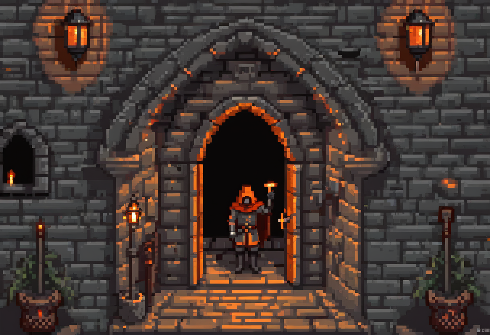

3 Authentication & Access

A successful login establishes an identity claim. The next question is what that account is allowed to do.
At Harbour, Rae needs to amend a booking but should not be able to export every participant’s details. Checking who signs in and limiting what they can do are separate controls. This chapter follows both, including how systems protect password verifiers, recover accounts and end compromised sessions.
3.1 What this chapter covers
By the end you should be able to:
- Distinguish identification, authentication, and authorisation, and explain mutual authentication and ID proofing.
- Explain the three factors of authentication and what multi-factor authentication actually adds.
- Describe how a system stores credentials: cryptographic hashing, and why we add salt.
- Explain Windows / NTLM authentication at a high level and why it matters in practice.
- Analyse password attacks (dictionary, brute-force, rainbow tables) and the defences that beat each one: salting, lockout, length.
3.2 Three words people mix up
These three terms are used loosely in everyday speech and precisely in security, and the precision matters.
Identification is a claim: you state who you are (a username, an account number, a name). It is just an assertion, and on its own it proves nothing.
Authentication is the proof of that claim: you demonstrate that you are who you said. Typing the password that matches the username is authentication. This is the step attackers most want to defeat, because a successful fake here makes everything downstream trust them.
Authorisation is what happens after: given that we now believe who you are, what are you allowed to do? A verified user is not an all-powerful one. Authentication gets you through the door. Authorisation decides which rooms you may enter. Keeping these separate lets a system trust who you are while still limiting what you can do. This is the principle of least privilege in action.
Two refinements are worth naming. Mutual authentication is when both sides prove their identity. Not only does the server check you, but you (or your software) check the server, so you’re not handing your credentials to an impostor. ID proofing is the harder, real-world problem of establishing identity in the first place. How does a bank know the person opening an account is who they claim, before any password exists? Authentication verifies a claim you set up earlier. Proofing is how that claim was trusted to begin with.
3.3 The three factors
How can you prove who you are? Every method falls into one of three factors:
- Something you know: a password, a PIN, the answer to a question.
- Something you have: a phone, a hardware token, a smart card.
- Something you are: a fingerprint, a face, a voice (biometrics).
Passwords are widely used because they need little special hardware, but guessing, reuse and phishing make them risky on their own. Long, unique passwords generated and stored with a password manager reduce guessing and reuse. Arbitrary complexity rules can encourage predictable substitutions; rate limiting addresses repeated online guesses. Neither stops a user submitting a password to an impostor.
3.3.1 Multi-factor authentication
One important improvement is to require more than one factor: multi-factor authentication (MFA). The power comes from combining categories: a password (know) plus a code from your phone (have) means stealing the password alone is no longer enough. The “have” factor takes many forms: a one-time code, a hardware token or key fob, or a smart card carrying a chip that proves possession. The “are” factor, biometrics, is convenient and hard to forget, but carries a permanent trade-off: you can change a breached password, but you cannot change your fingerprint. MFA is strong, but it is not magic. An attacker may still phish a one-time code or trick a user into approving a prompt. The type of MFA matters. Passkeys and suitable security keys bind an authentication response to the legitimate service, resisting a fake login site in a way a relayed one-time code does not. Their enrolment, device protection and recovery paths still need care. A biometric often unlocks an authenticator locally rather than being sent to the website as a password. NIST’s authenticator guidance distinguishes these mechanisms.
3.4 What a system actually stores
Here is the idea that surprises most people, and it is the hinge of the whole chapter: a well-built system does not store your password. If it did, anyone who stole the database (or any administrator) would know every user’s secret.
Instead, the system stores a password verifier produced by a purpose-built password-hashing scheme. At login it derives a verifier from the supplied password and stored parameters, then compares the result. A cryptographic hash is designed to resist inversion, but attackers can still guess inputs.
The scheme must make each guess expensive through a suitable work factor, and often memory cost. A fast general-purpose hash alone is not appropriate password storage. Libraries implementing schemes such as Argon2id handle these details; do not invent a scheme from hash primitives. OWASP’s password-storage guidance explains the choice and parameters.
3.4.1 Windows and NTLM
Windows’ legacy NTLM authentication is useful optional background. It uses password-derived credential material in a challenge/response scheme. Stolen NTLM hash material may enable pass-the-hash authentication without recovering the plaintext password. Treat it as a credential, not as harmless scrambled data. It is not a model for designing a new password store. Microsoft’s NTLM overview describes the protocol, and NIST’s threat guidance includes reuse of stolen authentication material.
3.5 Attacking passwords
If attackers can get the hashes but can’t reverse them, how do they recover passwords? They don’t reverse the hash. They guess, hash each guess, and look for a match.
A dictionary attack works through a list of likely passwords (common words, previously leaked passwords, predictable patterns) because real people rarely choose randomly. A brute-force attack tries every possible combination. For a finite candidate space it can exhaust every candidate, but the work may be infeasible. Length helps when it adds unpredictability; a long, well-known phrase can still be guessed early. The accelerator is a rainbow table: a giant precomputed lookup of hashes for enormous numbers of candidate passwords, so the attacker trades storage for speed and skips the recomputation.
3.5.1 The fix: salt
Rainbow tables have one fatal weakness, and the fix is elegant. Before hashing, the system adds a unique random value, a salt, to each password, and stores the salt alongside the hash. Now two users with the same password have different hashes, and the attacker’s precomputed rainbow table, built without your specific salt, is worthless. Salting doesn’t make any single password harder to guess. It prevents useful reuse of the same precomputed table across different salts. The attacker must work separately for each salt. The password-hashing scheme’s cost settings, not the salt alone, make each guess expensive.
Distinguish online guessing against a login service from offline guessing against stolen verifiers. Login rate limits and lockouts do not slow an attacker working on their own copy. Long unique passwords, proper verifier storage and protection of the database address that different threat.
3.6 The maths is rarely the weakest link
Everything above assumes the attacker has to defeat authentication. Often they go around it. A keylogger records the password as you type it, before any hashing happens. Social engineering just asks. A convincing email or phone call, and the user hands the secret over. Sniffing captures credentials sent in the clear across a network (which returns in the network-security chapter). And stealing the password file itself gives the attacker the hashes to work on at leisure. The recurring lesson of this book applies here: the cryptography is rarely what fails. The people and the plumbing around it are.
3.7 A word on single sign-on
One more idea you’ll meet: single sign-on (SSO) lets you authenticate once and gain access to many systems, and reduced sign-on is a lighter version of the same convenience. Users love it, and it improves security in one way: fewer passwords means less reuse and fewer sticky notes. But it concentrates risk: a compromised identity provider or session may expose several services. SSO must still enforce per-service permissions, restricted administration and revocation; it need not give every account access to everything. Protect the identity provider and recovery process with appropriate MFA.
3.8 Permissions and recovery are part of the design
A receptionist may need to amend one booking without being allowed to export every participant’s details. Enforce that rule on the server for each action, not just by hiding a button. Review access when duties change or people leave.
Recovery is another entry path. A help desk that bypasses all checks when a caller sounds urgent can undermine strong login controls. Plan an independent identity check, recovery credentials where appropriate, and revocation of affected sessions. Changing a password alone does not prove that every existing session has ended.
3.9 Where this connects
The hashing this chapter relies on is the subject of the next chapter, cryptography. Sniffing for credentials reappears in network security, when we capture packets on the wire. And stolen credentials, as in the Target breach, are how many intrusions begin, a thread running back to software security and malware.
3.10 Questions to consider
- If a website is breached, why is it so much better for you that they stored a salted hash of your password rather than the password itself?
- MFA asks for a second factor. Give a realistic example where MFA still fails, where the attacker gets in anyway. What does that tell you about relying on it?
- Why does adding salt defeat a rainbow table, when it doesn’t make any single password harder to guess?
3.11 Separate login from permission
In 10 minutes, write the actions Mara, Rae and a volunteer should be allowed to perform at Harbour. Include one denied action for each role. Add a test for account recovery and session revocation. Success means a legitimate login does not silently confer bulk-export or administrator rights.
Case inputs and checks: Harbour dossier.